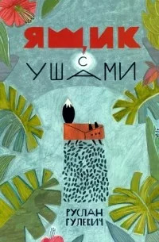
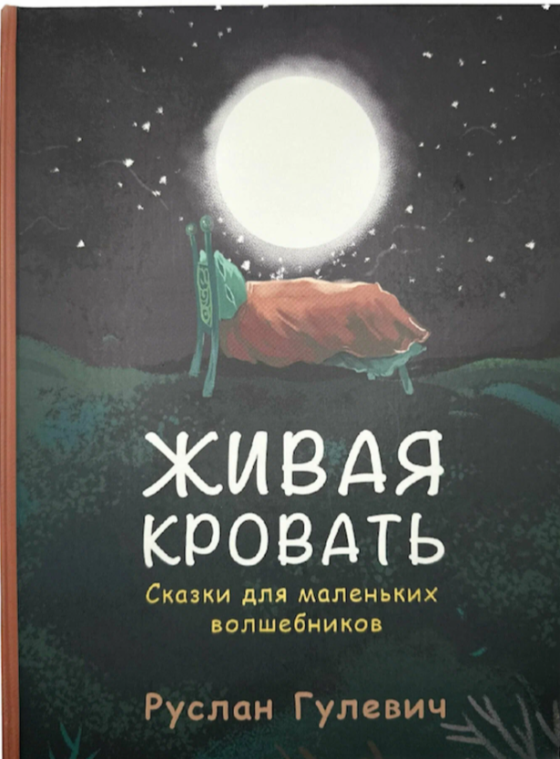
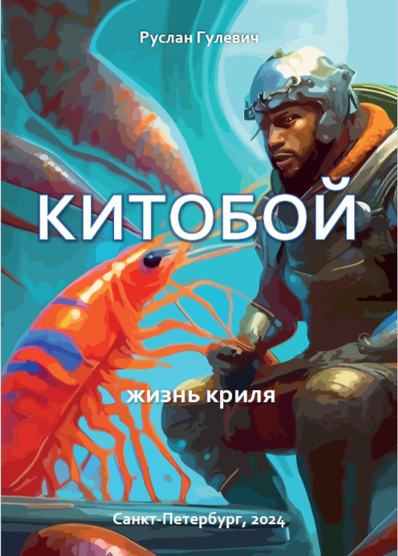
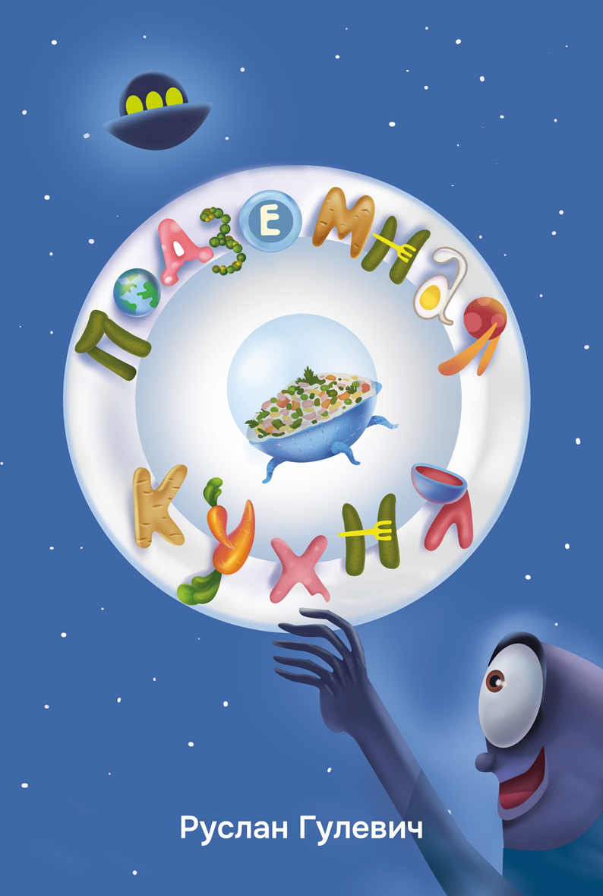
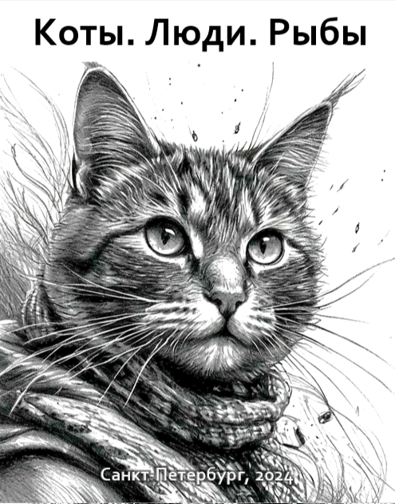
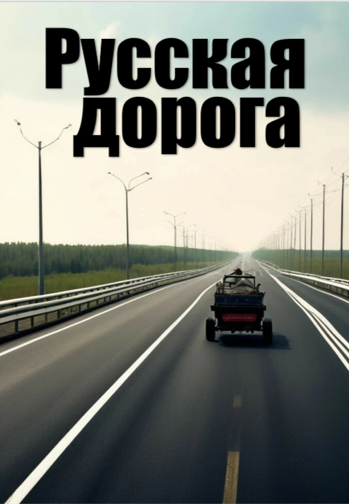
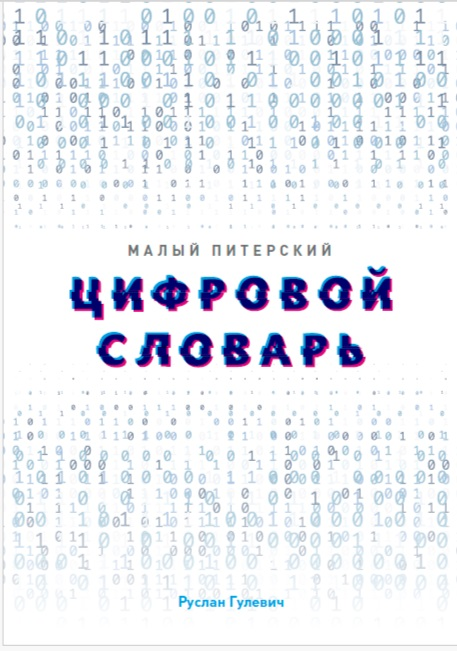
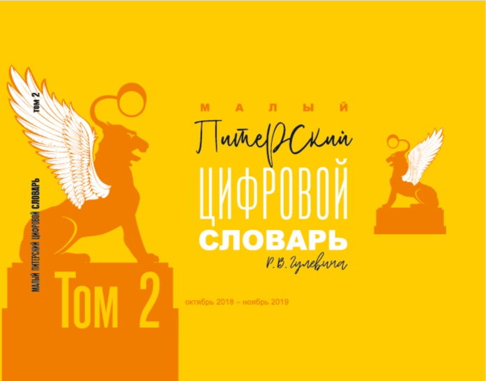
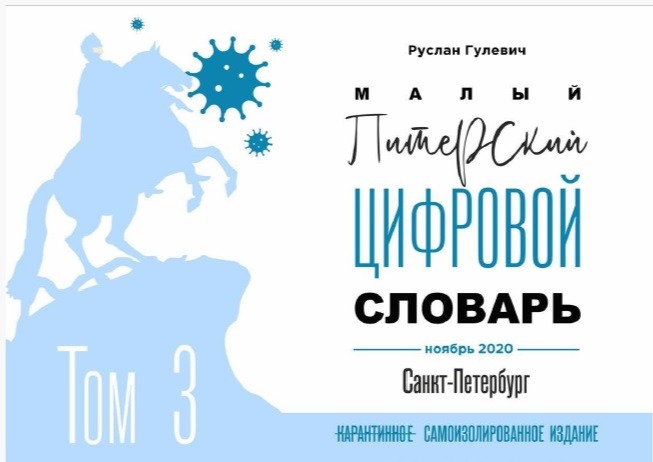
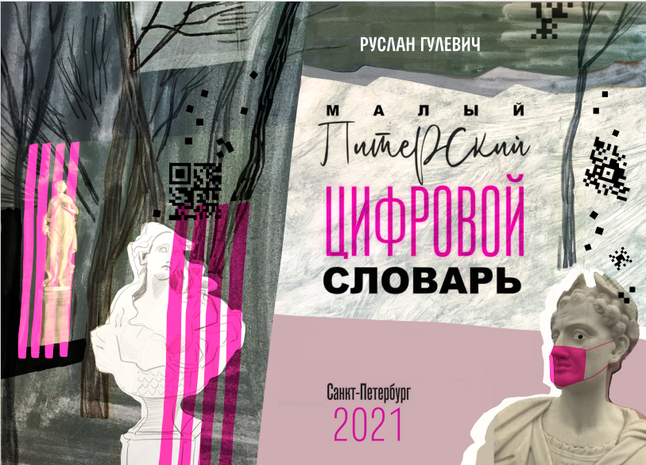

Про мои книги
Книги - дорогое удовольствие. За каждой книгой - труд автора, художника, корректора, редактора, верстальщика, затраты на печать и сборку, упаковку и отправки до потребителя.
Поэтому живая, напечатанная на бумаге книга, в переплёте, особенно с цветными иллюстрациями становится постепенно роскошью, увы. И чем красивее, чем "тактильнее" издание, тем оно дороже.
Все мои работы есть на маркетплейсах. Их можно купить. Но я хочу, чтобы мои книги были доступны всем. Поэтому здесь вы можете скачать их себе в читаемом формате.
Кроме изданных, на сайте я размещаю анонсы тех книг, которые только готовятся к выходу в свет.
А для настоящих айтишников и сочувствующих им - мои цифровые словари.
Книги
Изданное

Скачать книгуЯщик с ушами
В этой небольшой книге 2019 года - несколько историй, которые я рассказывал, сочиняя на ходу, моим младшим сыновьям - Тимуру и Бориславу. "Ящик с ушами" - мой первый опыт публикации детских сказок. Хотя мне порой кажется, что это не совсем сказки. И, может быть, даже не вполне детские. Зато все они добрые и с хорошим концом. Как и должно быть в жизни!

Скачать книгуЖивая кровать
Это моя вторая детская книга сказок. Так что я её выпускал уже как опытный сказочник. Первый сборник, "Ящик с ушами", так понравился читателям - мальчикам и девочкам от 3-х до 89-ти лет, - что я стал часто слышать от них и их родителей мотивирующее: "Пиши еще!". Или приятное: "А ведь это неплохо!". А иногда даже вдохновляющее "Ну, ты даешь!"

Белорусская кулинарная книга в изгнании
Перед вами самая необычная из всех известных кулинарных книг. Да, в ней вы найдёте массу рецептов. Но главное блюдо в ней - любовь к родной Беларуси, к её земле, к её синим озёрам, к её большим рекам и совсем маленьким речкам, к её грибным лесам… а главное – к её людям, щедрым, радушным и очень настоящим!
Чемпион сказал
Эта биографическая книга написана на основе серии интервью с легендарным советским боксёром 80-х годов прошлого столетия, Виктором Григорьевичем Рыбаковым, призёром двух Олимпиад, многократным победителем чемпионатов Европы и СССР.

Скачать книгуКиботой
Эту повесть я написал, как это часто бывает, не специально. Ехал в «Сапсане» из Москвы в Санкт-Петербург и думал о том, как живётся маленькому винтику в большой системе. И о роли личности в истории. Ведь дело не в размере, а в величии духа и в масштабности фигуры. Мужественными могут быть и слон, и лось, и даже маленькая рыбка, защищающая своих детей. А ещё важен исторический момент. Иногда сама судьба ставит нас перед выбором – сражаться или отступить. И тот, кто выбирает сражаться, становится героем, чьё имя овеяно славой. А тот, кто отступает, – выживает и передаёт гены мудрости своим потомкам.
Публикую только здесь
Новая Гренландия
Текст описывает момент бифуркации человеческой цивилизации. Пуск фабрики репликации роботов RoboX (роботы, которые самостоятельно себя ремонтируют, улучшают и копируют) делает людей биологически «лишними» в производственной цепочке. Освободившись от труда, человечество почти мгновенно расслаивается на два подвида, что задолго до этого предвидел Герберт Уэллс в «Машине времени», но с точностью до наоборот: элитой становятся не изнеженные элои, а технократы.

Скачать книгуПодземная кухня
Книга сказок про то, как на самом деле устроена наша планета, про говорящие шнурки, про фруктовую птичку и про многие другие странные вещи для детей до 99 лет.

Скачать книгуКоты. Люди. Рыбы
Сборник «Коты. Люди. Рыбы» — это умная, смешная и горьковатая книга о том, что контроль — иллюзия, свобода — понятие относительное (и для котов, и для людей), а счастье находится не в покупках и не в гормональных всплесках, а в ежедневном, порой мучительном усилии быть собой.
Счастье
Является ли счастье кратким гормональным всплеском (экстазом от дофамина, серотонина, окситоцина, эндорфинов) или же это устойчивое состояние внутренней гармонии, не зависящее от внешних раздражителей? Возможно ли «счастье по расписанию» — просыпаться и засыпать с улыбкой, жить в радости каждый миг? Здесь нет одного ответа. А тем более правильного.
Готовятся к изданию

Русская дорога
IT-словарики

Скачать книгуМалый питерский цифровой словарь
В ваших руках издание словаря, где я собрал наиболее часто упоминаемые (настолько часто, что некоторые из них уже превратились в мантру) слова, которые должен знать каждый ребенок, подросток или взрослый, пытающийся оседлать «волну цифровизации», неизбежность которой гарантируется самим фактом существования цифровой стратегии развития экономики РФ (полное название — Стратегия развития информационного общества в Российской Федерации на 2017–2030 годы).

Скачать книгуМалый Питерский цифровой словарь. Том 2
За год мир в очередной раз чудовищно изменился и помолодел. Еще год назад многие с усмешкой наблюдали на движение младо-цифровизаторов по России, гадая, к чему этот хайп — к мегараспилу государственного бабла либо к удовлетворению личного тщеславия особо рьяных апологетов цифры. Однако все оказалось более чем серьезно. И с точки зрения государственного внимания к теме, и с точки зрения национальных программ, и с точки зрения проектного финансирования, и с точки зрения мировых трендов. Мы уже живем в мире, который согласился себя называть цифровым.

Скачать книгуМалый Питерский цифровой словарь. Том 3
Это уже третий том цифрового словаря. Первый был встречен коллегами недоверчиво и с опаской, тогда текст про цифру воспринимался настороженно на волне всеобщего хайпа от диджитализации и даже потребовал некоторых объяснений (почему цифровой словарь слишком цифровой, не много ли цифры в нем, где бумажная версия в твердом переплете, а согласовано ли с руководителем, а с его руководителем, а с Советом министров и национальной программой по цифровизации Всея Руси). Второй том воспринимался уже почти благосклонно.

Скачать книгуМалый Питерский цифровой словарь. Том 4
2021 год — время, когда «удалёнка» стала нормой, произошла повальная кюаркодивизация населения, а за слово «цифровизация» в некоторых сообществах можно и в рыло схлопотать.
Услуги
Сделать из вас писателя
Выпустить вашу книгу
Научить вас как написать книгу, издать и толкнуть в каналы продаж, опираясь на собственный опыт и наработки.
Самое главное - ваше желание что-то сказать миру, поделиться. Остальное - дело техники, усердия и последовательных действий.
Я не волшебник, а сказочник, поэтому я не смогу вам гарантировать коммерческий успех вашего издания, но то, что они увидит свет - это в наших силах!
Написать с вами книгу в соавторстве
Если у вас есть контент и ресурсы, я могу предложить вам свое участие как со-автор и взять на себя основную работу по подготовке авторского текста.
Совместная работа над книгой позволяет объединить разные компетенции и создать более качественный продукт.
Учить и преподавать
С 2020 года я выступаю как приглашенный преподаватель в высшей школе либо в сообществах менеджеров.
Могу для вас разработать и прочитать лекцию, провести цикл занятий, или мастер-класс на темы:
- Цифровизация и ИТ
- Культура и менеджмент
- Экономика счастья
- Техно-форсайт
Опыт работы: МГИМО, ИМИСП, ИТМО и другие вузы
Провести корпоративную сессию
Время от времени в любой компании возникает потребность посмотреть на то, куда мы идём, зачем, с какой скоростью, с кем и как именно новым взглядом.
Перезапуск. Перезагрузка. Переосмысление. Для этого важен взгляд со стороны. И свежие мысли.
В такой ситуации очень полезны оказываются сессии с приглашенным фасилитатором.
Опыт работы с: Газпром нефть, Ростелеком, Росатом, Россети
Управленческий консалтинг
Опыт не пропьёшь, говорят мудрые люди. Тем более, если ты не употребляешь алкоголь.
За плечами участие в разработке нескольких ИТ и цифровых стратегий, антикризис-планов, планов по трансформации бизнеса.
Если вам нужен взгляд со стороны - можете использовать мой опыт.
Связаться с автором:
rgulevich@gmail.com
ВКонтакте
718693309 или r.gulevich
Telegram
@breadsalo (кулинарный блог)
Об авторе
Открыт к сотрудничеству, совместным проектам и новым идеям